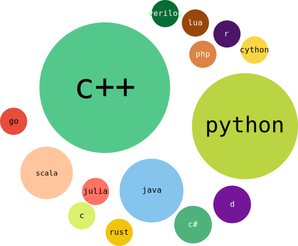

State of Open Source Machine Learning
Vadim Markovtsev
source{d}
64 open ML projects
Projects by year

Projects by interface language

Projects by implementation language

☆ Stars
| peak 1 |
< 1000 |
28% (18) |
| peak 2 |
2000 - 4000 |
25% (16) |
| top |
100,000 |
Tensorflow |
| 2nd |
29,000 |
Keras |
| 3rd |
28,000 |
sklearn |

Tensorflow
- Deep learning
- Disclosed in 2015
- Governed by Google
- Written in C++
- Main API is Python
- 1,500 contributors
- 11,500 GitHub issues
Keras
- Deep learning
- Appeared in 2015
- Governed by Francois Chollet
- Written in Python
- API is Python
- 660 contributors
- 7200 GitHub issues
sklearn
- Generic Machine Learning
- Appeared in 2010
- Independent group governance
- Written in Python
- API is Python
- 1080 contributors
- 5000 GitHub issues

Bus factor
How many core developers can be excluded to kill the project?
Wikipedia
Contribution guidelines
Document which describes how to help the project.
Reference.
Contribution guidelines

Code of conduct
Document which specifies the communication norms. It improves
the diversity and helps to maintain a welcoming environment.
Example.
Open source machine learning
- Half is owned by companies
- Hype started in 2013, peak in 2015
- Python rules
- Apache license is the most popular
- Top: Tensorflow, Keras, sklearn
Open source machine learning
- Bus factor should be >1
- Contribution guidelines
- Code of conduct